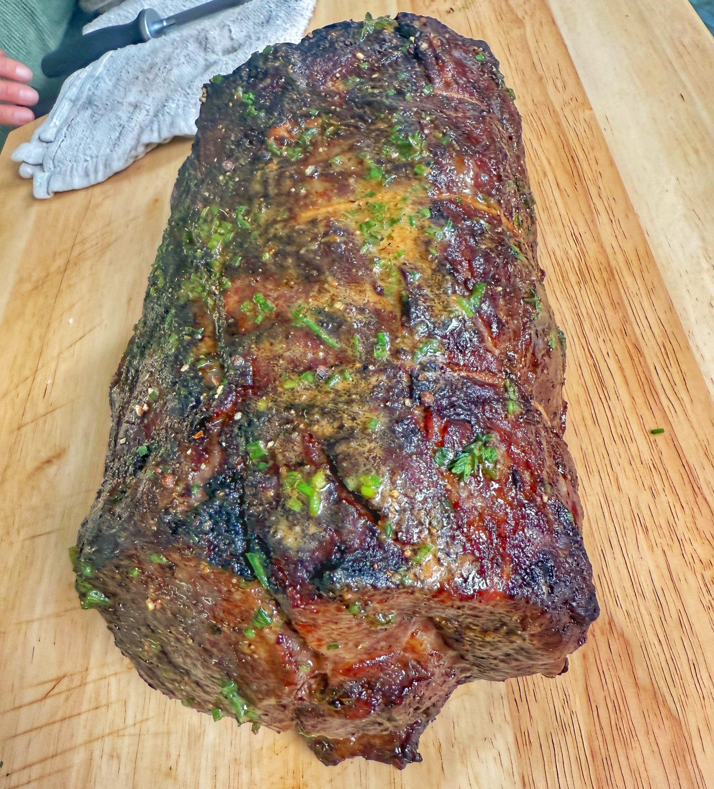

Understanding Prime Rib
Prime rib is the dish, not the grade. USDA grades (Prime, Choice, Select) refer only to marbling. A properly cooked choice-grade prime rib will be just as tender and flavorful as USDA Prime when you follow this method.
Portioning
- Boneless: about ¾ lb per person
- Bone-in: about 1½ lb per person
- Always round up.
Bone-in vs Boneless
- Bone-in: Bones don't add flavor, but they do insulate and help even cooking.
- Boneless: Great option, but tie the roast every 1½–2 inches with butcher's twine for even thickness and doneness.
The Salt Step (Most Important)
Key idea: Salt is the only seasoning that penetrates deeply; it changes how the meat holds onto moisture.
- Salt the roast generously on all sides 24–48 hours before cooking.
- Do not add garlic, butter, herbs, or spices yet—just salt.
- Salt denatures protein strands so they can retain more moisture.
- Place the salted roast on a rack over a sheet pan, uncovered, in the fridge.
- This dries the surface, forms a pellicle, and improves browning.
Cooking Process
First Stage: Low Roast
- Preheat oven to 225°F.
- Lightly coat the exterior with beef fat or neutral oil if desired.
- Roast until internal temperature reaches 115–120°F for rare to medium-rare.
- Use a thermometer; ignore the clock.
- Once the roast reaches temp, it can rest up to 4–5 hours before finishing, which makes this ideal for holidays and entertaining.
Second Stage: High-Heat Finish
- Increase oven temperature to 500°F.
- Apply a light compound butter (optional but recommended): soft butter, thyme or chives, mustard, Worcestershire, and optionally miso.
- Roast just until browned and crusty.
Final Temperature & Rest
- Target 125°F for ideal medium-rare (adjust higher if you want more doneness).
- Rest 20 minutes before carving.
- Finish with black pepper and fresh herbs—pepper belongs at the end.

Making Gravy
- Simmer beef scraps with onion, carrot, celery, garlic, and herbs.
- Finish with a small cornstarch slurry for body.
- Optional umami additions: Worcestershire, soy, or miso.
- Aim for glossy, not thick.
Bottom line: Control salt, temperature, and timing, and you'll get consistently great prime rib. This same method works for other large beef roasts, not just holidays.